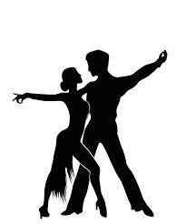
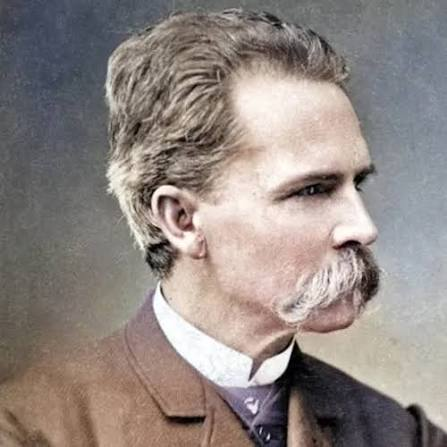

El estilo caleño se distingue por la velocidad de los pies, las acrobacias y la energía. Vive en templos de la rumba como La Topa Tolondra y Zaperoco, y en academias de barrios como San Antonio. En el azote de baldosa, las familias enseñan a bailar a los niños desde la infancia.
Salsa Choque: fusión del Pacífico vallecaucano que mezcla salsa con reggaetón y hip-hop.

Traje de Luces Caleño: canutillos, flecos, lentejuelas y calzado con tacón reforzado para bailar salsa.
Trajes del Pacífico: polleras amplias y coloridas, pañoletas blancas y blusas holgadas para el currulao.
El movimiento Cali Wood (Andrés Caicedo, Carlos Mayolo, Luis Ospina) renovó la narrativa y el cine. El taller La Linterna mantiene el cartelismo impreso a mano.
Jorge Isaacs: María, cumbre del romanticismo hispanoamericano. Andrés Caicedo: ¡Que viva la música!, la Cali de los setenta. Umberto Valverde: Bomba Camará, los barrios y la salsa. Pilar Quintana: Premio Alfaguara por La perra.

Las Macetas de Alfeñique son figuras de azúcar adornadas con papeles y juguetes. El Festival de Macetas, en junio, celebra el vínculo entre padrinos y ahijados y es Patrimonio Inmaterial de la Nación.